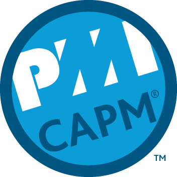

About Me
Picture was taken from my LinkedIn Profile
I was born and raised in the Northwest suburbs of Chicago. I played baseball and tennis in my youth and was in track & field in high school.
I also joined Business Professionals of America and won state in Pc Servicing & Troubleshooting. After high school, I went to Northern Illinois University.
I joining Alpha Epsilon Pi my freshman year and served as Treasurer for one year and President my senior year.
In 2015 I graduated with a BS in Corporate Communications and Minor in Family Consumer and Nutritional Sciences.
LinkedIn Profile
Project Management

Picutre was taken from youracclaim website
After college, I decided to continue my career and personal development by perusing a project management certification.
I signed up for a 5-Saturday course totaling 40 hours of instruction to obtain the knowledge needed to sit for the certification.
After taking a few days off work to prepare for the exam, I sat for the 150 questions / 3-hour long exam. Once the exam was over,
I received my score and learned that I had achieved my goal! I became a Certified Associate Project Manager. I have held this title since September 2016.
I plan on sitting for my PMP (Project Management Professional) certification once I fulfill all the requirements to sit for the exam.
CAPM Certification Page From PMI
Learning Development

Picutre was taken from Wikimedia page
After my initial pursuit into gaining an A+ certification and talking to my coworkers who are developers, I changed my path and wanted to learn development instead.
I talked to a couple of friends who recommended Udacity as a good way for me to start learning about becoming a developer. The same night I reviewed Udacity's website
I signed up for the Introduction to Programming course and started my adventure. I look forward to all the skills I learn from this nanodegree and I plan on continuing
my education afterwards in the Full Stack nanodegree.
Udacity Intro To Programming Nanodegree Page
{kind=link}